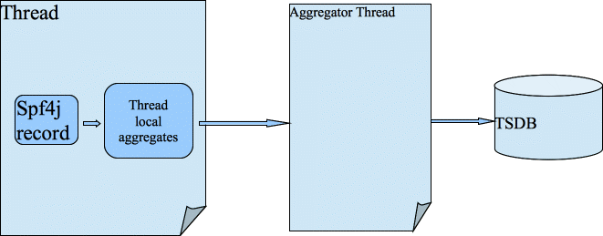
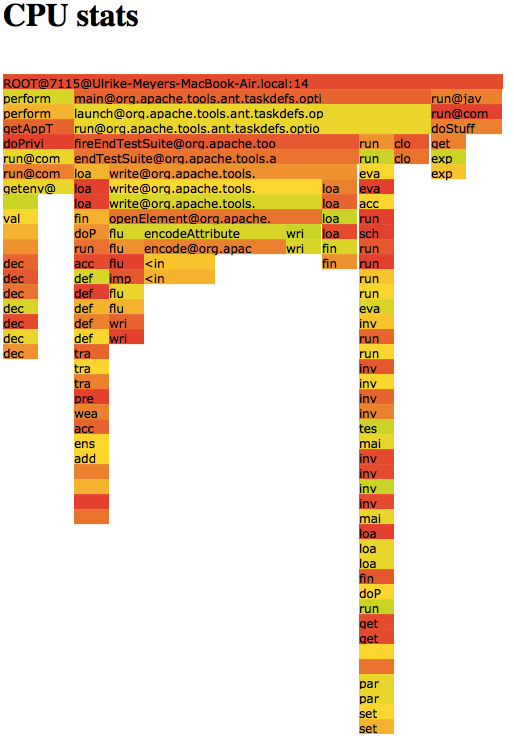
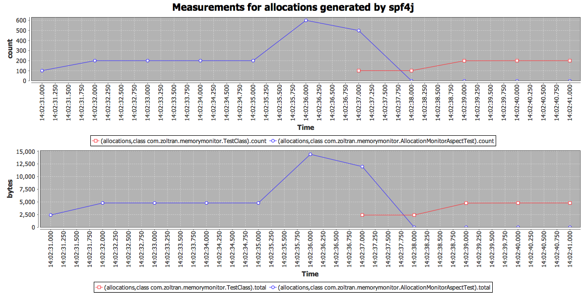
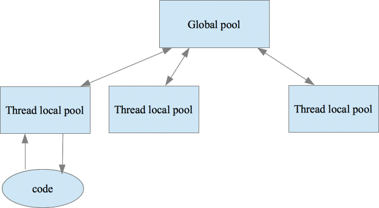

Spf4j (Simple performance framework for java)
Table of Contents
1.Overview
2.License
3.Code
4.1.Why not use jamon, netflix servo ?
4.2.How to record measurements?
a)Via API
4.3.How to see the recorded measurements?
5.1.Why another profiling library?
5.2.When to profile your code?
5.4.How to see the profile data?
5.6.Monitoring memory allocations:
6.High Performance Object Pool
6.1.Why another object pool implementation?
6.2.Use case
The spf4j library is a collection of utilities and components to monitor, troubleshoot, performance issues. This library will also contain high performance components not available in other open source libraries.
This library is LGPL licensed: http://www.gnu.org/copyleft/lesser.htm
http://code.google.com/p/spf4j/
https://github.com/zolyfarkas/spf4j
Observing a system changes the system. The goal of this library is to minimize the observer effect. The code in spf4j is carefully written to be as high performance as possible, it should outperform all competing libraries on any modern JVM(implementing biased locking) running on a CCNUMA system.
Low impact with log linear quantized recording for Gauge type of measurements:
private static final MeasurementRecorder recorder = RecorderFactory.createScalableQuantizedRecorder(forWhat, unitOfMeasurement, sampleTime, factor, lowerMagnitude, higherMagnitude, quantasPerMagnitude);
…
recorder.record(measurement);
This is ideal for recording execution times and provides the most detail, min, max, avg, and detailed distribution heat chart.
If distribution chart is not needed createScalableMinMaxAvgRecorder is available with less overhead.
Low impact with simple counting for Counters:
private static final MeasurementRecorder recorder = RecorderFactory.createScalableCountingRecorder(forWhat, unitOfMeasurement, sampleTimeMillis);
…
recorder.record(measurement);
This is ideal for measurements like bytesSent, bytesReceived....
Dynamic with log linear quantized recording for Gauge type of measurements:
private static final MeasurementRecorderSource recorderSource = RecorderFactory.createScalableQuantizedRecorderSource( forWhatCategory, unitOfMeasurement, sampleTime, factor, lowerMagnitude, higherMagnitude, quantasPerMagnitude);
…
recorderSource.getRecorder(forWhat).record(measurement)
As with the low impact static recorders there are dynamic equivalents: createScalableMinMaxAvgRecorderSource and createScalableCountingRecorderSource
Annotate a method you want to measure and monitor performance with the annotation:
@PerformanceMonitor(warnThresholdMillis=1, errorThresholdMillis=100, recorderSource = RecorderSourceInstance.Rs5m.class)
Start your jvm with Aspectj load time weaver:
-javaagent:${project.build.directory}/lib/aspectjweaver-${aspectj.version}.jar
Make sure your aspectj config file (META-INF/aop.xml) contains:
<aspectj>
<aspects>
<aspect name="org.spf4j.perf.aspect.PerformanceMonitorAspect"/>
</aspects>
<weaver options="-verbose">
<include within="com.*..*"/>
</weaver>
</aspectj>
This will record the execution times of the annotated method and will also log (via spf4j) a message containing the call detail and execution time if the warn or error thresholds are exceeded. Dynamic quantized recorder source is used.
Via JMX invoke spf4j/RRDMeasurementDatabase/generateCharts this will generate 2 charts that will contain the recorded measurements:
a) min, max, avg , measurement count values/ time axis
b) Distribution chart, where on the X axis we have the time, the Y axis we have the recorded values (buckets) and the number of measurements recorded that fall in a particular bucket will be represented by the color(values to color mapping can be seen in the legend). As you can see this is a log linear chart.


Charts are generated using jfreechart library.
It all started with Brendan Gregg's blog: http://dtrace.org/blogs/brendan/2011/12/16/flame-graphs/ combined with a few hours of coding. However since than more monitoring capability has been added to spf4j. Aspects to monitor object allocation, network, file, memory usage have been added.
I recommend to deploy your code with profiling turned on as much as you can. In my case I have profiling data collection turned on in test/qa environments all the time. (with 100ms sampling interval). If you can afford to do it in PROD do it.
Add spf4j to your classpath and the following to your command line:
${JAVA_HOME}/bin/java [your jvm args] org.spf4j.stackmonitor.Monitor -f reportFile.html -ss -si 100 -w 600 -main [your app main class] - - [your app arguments]
This will start your application with profiling enabled, with a 100 ms sampling interval. After the process ends reportFile.html will be generated with a graphic width of 600 pixels. Profiling can also be enabled/disabled via JMX.
Supported arguments:
-f VAL : output to this file the perf report, format is HTML
-main VAL : the main class name
-md N : maximum stack trace depth
-nosvg : stack visualization will be in svg format
-si N : the stack sampling interval in milliseconds
-ss : start the stack sampling thread. (can also be done manually via
jmx)
-w N : flame chart width in pixels
After the program finishes it will write the data to the reportFile.html

The
total view shows the total picture of what your application is doing.
Now as you can see this profile of my simple test code is sleeping most of the time. I you are interested into what the process is doing while it is on CPU, the next report will provide that detail:

Processes are staying quite a bit waiting for things to happen/sleeping and there is not much you can do about that, eliminating those states from the report allows you to see and concentrate on the “useful” parts of your application. As you can see above (if you look at the actual reports hovering with the mouse above a entry will display the details) DemoTest is also doing stuff (doStuff) not only sleeping...
A sampling thread is started and running in the background. This thread uses Thread.getAllStackTraces() or the JVM MX beans (configurable) to get all stack traces for all threads. Each sample is added to a tree that aggregates the stack trace data.
You will need to apply aspect org.spf4j.memorymonitor.AllocationMonitorAspect to the code you want to monitor object allocations. At any time while you process is running you can generate the memory allocation charts:

Allocations will classified based on the class where they are done. In the chart above you can see how memory allocations happened, both byteSize and allocation count and what class. Object size computation might be too much overhead, in that case you can disable it by system property setting: perf.allocations.recordSize=false
The aspect org.spf4j.iomonitor.NetworkMonitorAspect will allow you to monitor you processes network traffic:

In my(I am not alone) view current available object pool implementations are less than perfect. Beside the scalability issues and bugs, I don't like the following implementation choices found in other implementations:
Test on borrow is pointless, there is no guarantee that you will get a valid object even if you test on borrow. This encourages the developer to disregard handling of this case when it receives an invalid object. This practice also often is a performance killer.
Indiscriminate test on return is not optimal. Test on return should be done only in the case where there is a suspicion that the object is invalid, otherwise the performance impact will be too high to be acceptable in most cases. Pool client should be able to provide feedback on return for that case.
NO exception swallowing. If a exception happens with the pooled objects the pool user will know about it and will have to handle it.
You will not find code like this (apache commons):
131 /**
132 * Unconditionally close an <code>Reader</code>.
133 * <p>
134 * Equivalent to {@link Reader#close()}, except any exceptions will be ignored.
135 * This is typically used in finally blocks.
136 *
137 * @param input the Reader to close, may be null or already closed
138 */
139 public static void closeQuietly(Reader input) {
140 try {
141 if (input != null) {
142 input.close();
143 }
144 } catch (IOException ioe) {
145 // ignore
146 }
147 }
In Guava (my favorite open source library) the authors did the same mistake as the apache folk above. But I am happy they realized the problem recently:
closeQuietly(Closeable closeable)
Deprecated.
This method has few valid use cases and encourages misuse by making it easy to do the wrong thing. Among other things, it may swallow exceptions that really should be thrown, such as exceptions thrown when closing an output stream: this often involves flushing buffered data to the final output destination and as such it is just as important to throw the exception thrown when closing as it is to throw an exception thrown by a call to a write method. This method is scheduled to be removed in Guava 16.0.
In guava they recommend the following pattern for not loosing the original exception:
public void useStreamNicely() throws IOException {
SomeStream stream = new SomeStream("foo");
boolean threw = true;
try {
// ... code which does something with the stream ...
threw = false;
} finally {
// If an exception occurs, rethrow it only if threw==false:
Closeables.close(stream, threw);
}
}
I prefer using the exception chaining technique in which case both exceptions info will be thrown:
T object = pool.borrowObject();
try {
handler.handle(object);
} catch (Exception e) {
try {
pool.returnObject(object, e);
} catch (ObjectReturnException ex) {
throw Exceptions.chain(ex, e);
} catch (ObjectDisposeException ex) {
throw Exceptions.chain(ex, e);
}
if (e instanceof RuntimeException) {
throw (RuntimeException) e;
} else {
throw new RuntimeException(e);
}
}
pool.returnObject(object, null);
The classical use case for an object pool is to pool your jdbc connections. One of the most popular object pool implementations is apache commons-pool with dbcp-pool specialized in JDBC object based on it. A lot of people are unhappy with this implementation (including myself), so much that the apache tomcat developers wrote their own implementation. Here is a comparison of their implementation against dbcp pool:
http://tomcat.apache.org/tomcat-7.0-doc/jdbc-pool.html
A performance comparison between dbcp, c3p0, and tomcat jdbc pool :
http://www.tomcatexpert.com/blog/2010/03/22/understanding-jdbc-pool-performance-improvements
The goal of this implementation is to be more reliable and faster than any of the implementations out there. (Unit test will fail otherwise)
Creating a pool is simple:
ObjectPool<ExpensiveTestObject> pool = new ObjectPoolBuilder(10, new ExpensiveTestObjectFactory()).build();
at minimum you will need to provide the maximum size and the object factory.
To do something with a object from a pool you will need to:
Template.doOnPooledObject(new ObjectPool.Hook<PooledObject, SomeException>() {
@Override
public void handle( PooledObject object) throws SomeException {
object.doStuff();
}
}, pool, IOException.class);
You can also use the borrow and return methods on the object pool to get and return an object to the pool.

The architecture above biases object to threads, so a thread will most likely get the same object minimizing object contention (if pool size >= thread nr which is the recommended sizing).